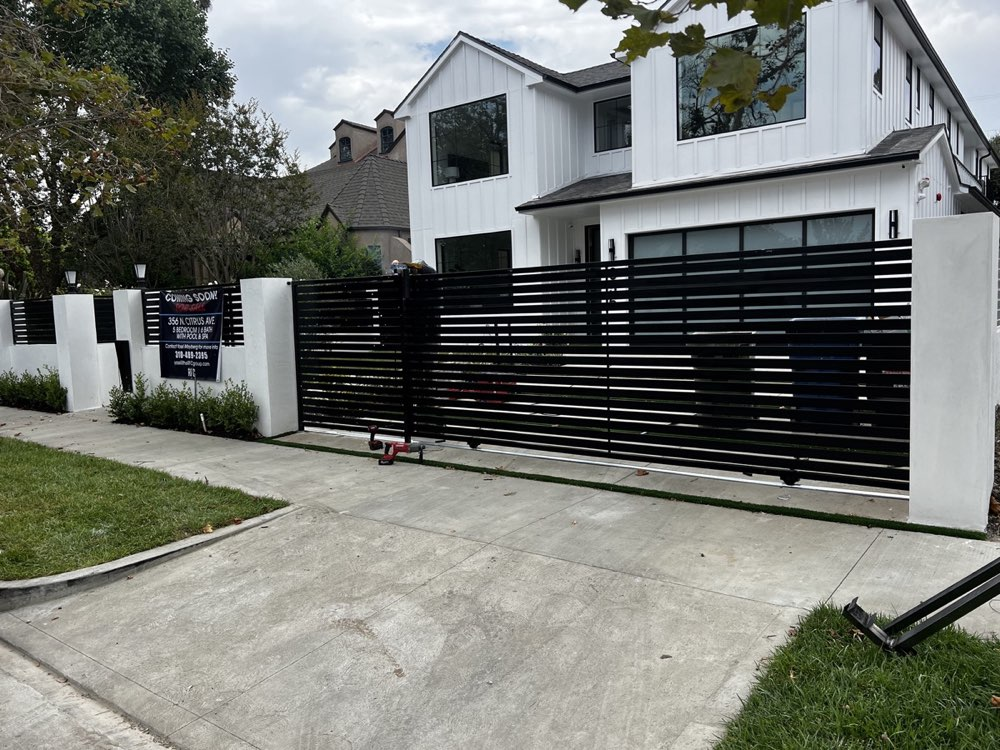
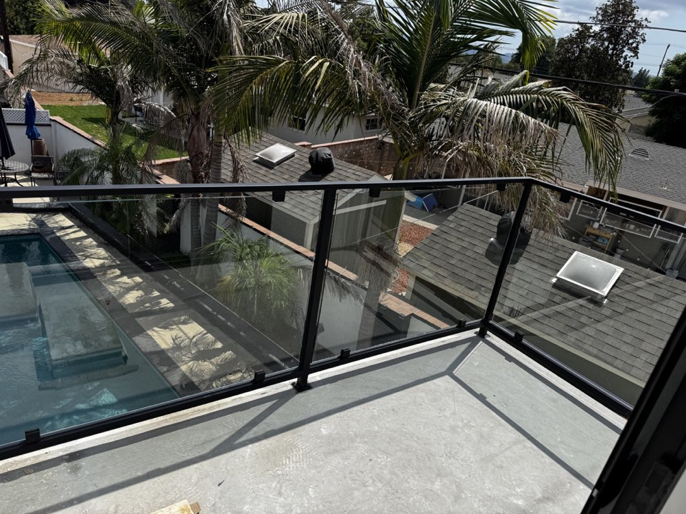

Luxury estate gates, ornamental railings, and bespoke metal fabrication crafted for Westlake Village's most distinguished properties — by a family that has been doing this for 25+ years and 3 generations.
Westlake Village is one of Southern California's most exclusive addresses. The lakefront estates on Westlake Island, the guarded enclaves of North Ranch, the private luxury compounds along Lake Sherwood, and the family-oriented communities of Oak Park all share one expectation: everything must be done right. At Legendary Metal Works Inc., we have spent 25+ years and three generations earning the trust of homeowners exactly like yours — and we bring that same standard to every project we take on in Westlake Village.
Our shop is about 25 minutes up the 101 in Ventura. Every gate, railing, and iron door we build is custom-fabricated in-house, then delivered and installed by our own crew. No subcontractors, no shortcuts. When you see the finished product at your property, you will know why clients have been referring us to their neighbors for over two decades.
We work closely with homeowners, architects, interior designers, and HOA architectural committees throughout Westlake Village. Whether you need a grand two-panel driveway gate that anchors a North Ranch estate or a set of glass-and-iron railings for a lakefront deck on Westlake Island, we design it around your property, your style, and your budget.


Founded in 2000 and now in its third generation, Legendary Metal Works brings more than 25 years of hands-on fabrication expertise to every Westlake Village project.
Over 500 custom gates, railings, doors, and metalwork installations across Ventura and LA counties — including dozens of high-end estate projects throughout the Westlake Village area.
We are not a franchise or a big-box contractor. We are a local family business based 25 minutes away in Ventura — personally invested in the quality of every job we put our name on.
CA Lic #1119503. We pull all required permits and prepare complete HOA architectural submissions for North Ranch, Westlake Island, and other community review boards — so you never have to.
From the guarded enclaves of North Ranch to the lakefront estates on Westlake Island — we serve every neighborhood in and around Westlake Village.
Custom driveway gates for Westlake Village properties typically range from $8,000 to $35,000, depending on size, design complexity, materials, and automation. Estate projects for North Ranch or Lake Sherwood with ornamental ironwork, intercom, and smart-home integration fall toward the higher end. We provide detailed proposals after a complimentary on-site consultation — no surprises.
Most custom gate and railing projects take 6 to 10 weeks from design approval to completed installation. Simple railing replacements can move faster; large estate gate systems requiring North Ranch or Westlake Island HOA architectural review may need additional lead time. We give you a firm timeline at the start and keep you updated throughout.
Yes. Legendary Metal Works Inc. holds California Contractor License #1119503 and is fully insured. We pull all required building permits and handle HOA architectural submissions on your behalf — standard practice for every project we complete in Westlake Village, North Ranch, Lake Sherwood, and Oak Park.
Absolutely. North Ranch's architectural review committee has detailed requirements for gate design, materials, height, and finish. We have experience navigating these guidelines and prepare your complete HOA submission package — drawings, material specs, and finish samples — as part of our service. We handle all communications with the review board so you don't have to.
Lakefront and waterfront properties face accelerated corrosion from humidity and ambient moisture. We recommend marine-grade powder coatings, stainless steel hardware, and corrosion-resistant alloys for gates near Westlake Lake and Lake Sherwood. We design and finish every lakefront project to hold up beautifully for decades in that environment.
Our fabrication shop is located at 4882 McGrath St, Unit 110 in Ventura — approximately 25 minutes from Westlake Village via the 101. All metalwork is custom-fabricated in-house and delivered directly to your property for installation by our own crew. No subcontractors, ever.
Yes. We design and install full estate security gate systems with automated operators, video intercom, keypad and remote access, license-plate cameras, and smart-home integration. These are engineered to provide genuine security while complementing the architectural style of luxury homes throughout Westlake Village, Oak Park, and the surrounding area.